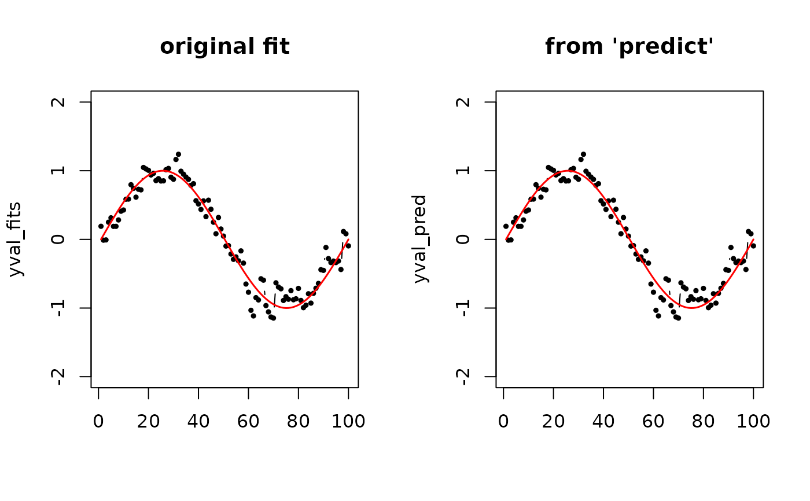

R/inference_m2skreg.R
predict.m2skreg.RdGiven new observations \(X_1, X_2, \ldots, X_M \in \mathcal{M}\), plug in the data with respect to the fitted model for prediction.
# S3 method for m2skreg predict(object, newdata, geometry = c("intrinsic", "extrinsic"), ...)
| object | an object of |
|---|---|
| newdata | a S3 |
| geometry | (case-insensitive) name of geometry; either geodesic ( |
| ... | further arguments passed to or from other methods. |
a length-\(M\) vector of predictted values.
# \donttest{ #------------------------------------------------------------------- # Example on Sphere S^2 # # X : equi-spaced points from (0,0,1) to (0,1,0) # y : sin(x) with perturbation # # Our goal is to check whether the predict function works well # by comparing the originally predicted values vs. those of the same data. #------------------------------------------------------------------- # GENERATE DATA npts = 100 nlev = 0.25 thetas = seq(from=0, to=pi/2, length.out=npts) Xstack = cbind(rep(0,npts), sin(thetas), cos(thetas)) Xriem = wrap.sphere(Xstack) ytrue = sin(seq(from=0, to=2*pi, length.out=npts)) ynoise = ytrue + rnorm(npts, sd=nlev) # FIT & PREDICT obj_fit = riem.m2skreg(Xriem, ynoise, bandwidth=0.01) yval_fits = obj_fit$ypred yval_pred = predict(obj_fit, Xriem) # VISUALIZE xgrd <- 1:npts opar <- par(no.readonly=TRUE) par(mfrow=c(1,2)) plot(xgrd, yval_fits, pch=19, cex=0.5, "b", xlab="", ylim=c(-2,2), main="original fit") lines(xgrd, ytrue, col="red", lwd=1.5) plot(xgrd, yval_pred, pch=19, cex=0.5, "b", xlab="", ylim=c(-2,2), main="from 'predict'") lines(xgrd, ytrue, col="red", lwd=1.5)  par(opar) # }